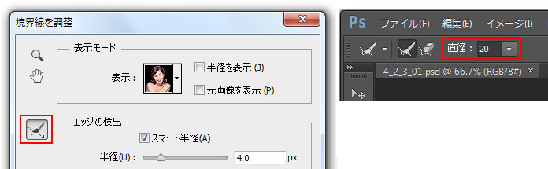
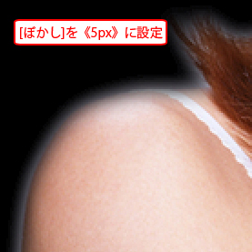

第4章 選択範囲
第2節 選択範囲の応用
本項では、CS3のバージョンから加わったクイック選択ツールを学習します。
第3項 クイック選択ツールの使用
この項で学習する内容
- [クイック選択ツール]の操作方法を習得する。
- 選択範囲の境界線を調整する方法を習得する。
クイック選択ツールを使用する
[クイック選択ツール]は、画像を自動的に分析し、
すばやく選択範囲が作成できるツールです。
素材フォルダ「PS04」から、素材ファイル4_2_3_01.psdを開きましょう。

[ツールパネル]から、[クイック選択ツール]を選択します。
[コントロールパネル]の[ブラシピッカー]より、
ブラシの直径を《10px》に変更しましょう。
女性の頭の部分を少しドラッグしましょう。
自動的に選択範囲が作成されます。
続けて、女性の画像をドラッグしていきましょう。
選択範囲が自動的に広がっていきます。
「クイック選択ツール」は、画像のカラーを分析し、自動的に選択範囲を調整します。
ここでは、細かく選択範囲がとれなくてもかまいませんので、
引き続きドラッグして大まかに女性の選択範囲を作成しましょう。
はみ出した選択範囲を削除するには、
コントロールパネルの[現在の選択範囲から一部削除]のアイコンを選び
、
はみ出した部分をなぞって調整しましょう。
削除しすぎた箇所は[選択範囲の追加]アイコンに切り替えて選択します。
調整箇所によって、ブラシサイズを変更するなどして微調整しましょう。
ワンポイント
[選択範囲の追加]アイコンを選択した状態で、【Altキー】〔Optionキー〕を押し続けると、
一時的に[現在の選択範囲から一部削除]のモードに切り替わります。
髪の毛の先の部分などはこの後の「境界線の調整」で修正します。
大まかに女性全体の選択が取れればそれで構いません。
引き続き、選択範囲の境界線を調整します。
誤って選択範囲を消さないように、メニューバーの[選択範囲]-[選択範囲を保存]で
選択範囲を保存しておきましょう。
選択範囲の名前は任意の名前を付けて構いません。
選択範囲は解除せずに次へ進みましょう。
境界線の調整
先ほどの[クイック選択ツール]で作成した選択範囲は
大まかに作成しただけなので、まだ境界線がきれいな状態とは言えません。
[境界線を調整]機能を使用すると、実際にプレビューを確認しながら選択範囲の周囲をぼかしたり、
拡大、縮小したりすることができます。
また、CS5からこの機能が大幅に強化され、
本来、選択範囲が取りにくい髪の毛のような毛羽立った箇所についても、
半自動的に選択範囲を調整できるまでに進化しています。
まずは[クイック選択ツール]を選んだ状態で
[コントロールパネル]の[境界線を調整]のボタンをクリックします。
[境界線を調整]ダイアログボックスが表示されます。
最初に[表示モード]を設定します。
[表示モード]は選択範囲外の背景色を変更できます。
選択対象に応じて選択範囲の境界の様子が一番よくわかるものを選択します。
今回は「黒地」を選択しておきましょう。
選択した女性以外の背景部分が黒色になりました。
[境界線を調整]ダイアログボックス左側の[ズームツール]と[手のひらツール]を使い、
下図のように女性の肩口あたりを拡大表示します。
[ズームツール]選択時に【Altキー】〔Optionキー〕を押し続けると
ズームアウトができるようになります。
肩のあたりの境界線があまりきれいではなく、
また髪の毛の先も背景部分が残っている箇所が見受けられます。
CS5から搭載された[スマート半径]と[半径調整ツール]を使うことで、
このような選択範囲の境界を非常に簡単な操作できれいに整えてくれます。
ダイアログボックスの[スマート半径]にチェックを入れ、半径を《4px》程度に設定します。
肩のラインの境界線がきれいに調整されます。
※選択範囲の取り方によって適切な半径値は異なります。
元画像のプレビューを確認しながら、適切な半径値に調整してください。
毛先の毛羽立った箇所は[半径調整ツール]を使い、調整します。
ダイアログボックスの[半径調整ツール]アイコンを選択し、
[コントロールパネル]の直径を《20》程度に設定しましょう。

毛先のあたりをドラッグすると、ドラッグした箇所に元の背景が一時的に表示されます。
毛先すべてが表示される程度にドラッグして手を離すと
毛先部分の選択範囲が自動的にきれいに調整されます。
同様に[半径調整ツール]を使い、髪の毛の先や輪郭などをドラッグしてきれいに調整しましょう。
修正箇所に応じてツールの直径は調整してください。
境界線を調整しすぎて、背景の黒地が透けて見える箇所ができる場合があります。
[コントロールパネル]の[調整消去ツール]に切り替えて、該当箇所を修正します。
黒地が透けて見える箇所をドラッグすると、修正することが可能です。
毛先のような複雑な箇所も、ほぼドラッグ操作だけできれいに選択範囲が調整できました。
ダイアログボックスは閉じずに次に進みます。
境界線調整オプション
[境界線を調整]ダイアログボックスには様々なオプションがあります。
それらを簡単に紹介しておきましょう。
[表示モード]のオプション
[半径を表示]にチェックを入れると、
調整の対象となる選択範囲の境界部分だけが表示されます。
ここで表示される箇所が、各種オプションの影響を受ける箇所になります。
[元画像を表示]にチェックを入れると、
境界線調整する前の状態を確認できます。
[エッジを調整]のオプション
[滑らかに]
選択範囲の境界線の不規則にギザギザになる部分を減らし、アウトラインを滑らかにします。
[ぼかし]
選択範囲の境界線の周りをぼかします。

[コントラスト]
値を大きくすると、選択範囲の境界線が明確になります。
ただ、エッジのシャギー（ギザギザ）がはっきり出る場合がありますので、
あまり設定することはありません。
[エッジをシフト]
値をマイナス方向に設定すると、境界線が内側に移動し、
値をプラス方向に設定すると、境界線が外側に移動します。
主に境界線を内側に移動させ、不要な背景部分を削除する際に使用します。
[出力]のオプション
[不要なカラーの除去]
フリンジと呼ばれる境界線の周囲にできる不要な余白を、
近隣のピクセルのカラーで置き換えます。
[量]の数値を調整して、置き換える範囲を設定します。
[出力先]
編集した選択範囲の境界線を、[選択範囲]のままで調整を確定するのか、
新規レイヤーや新規ドキュメントに選択範囲を書き出すのかを設定できます。
※レイヤーやレイヤーマスクについては次の章で学習します。
境界線の調整を確定する
各種オプションが確認できたら、境界線の調整を確定しましょう。
今回は最後に[滑らかに]を《5》に、[エッジをシフト]を《-30%》程度に調整し、
[出力先]を[選択範囲]にして「OK」をクリックします。
選択範囲が調整できたら、【Ctrl＋Cキー】〔Command＋Cキー〕を押して
選択範囲を一旦コピーします。
次に素材フォルダ「PS04」から、素材ファイル4_2_3_02.psdを開き
【Ctrl＋Vキー】〔Command＋Vキー〕を押してコピーした選択範囲をペーストしましょう。
毛先の部分などを拡大して見るとわかりますが、
きれいに選択範囲が調整できています。
この項のまとめ
- [クイック選択ツール]の操作方法
- ・画像内を[クイック選択ツール]でドラッグするだけで画像を自動分析し、選択範囲をほぼ正確に取得できる。
・選択しすぎた箇所を削除したい場合は、[コントロールパネル]の[現在の選択範囲から一部削除]を選択するか、【Altキー】〔Optionキー〕を押しながらドラッグすることで、不要な選択範囲を削除できる。
・選択範囲を追加したい場合は、[コントロールパネル]の[選択範囲の追加]を選択した状態で、選択範囲を追加することができる（通常は常時この設定で使用する）。 - 境界線の調整方法
- ・各種選択ツールを選んだ状態で[コントロールパネル]の[境界線を調整]をクリックすることで、選択範囲の境界線をきれいに調整するダイアログボックスを表示させることができる。
・CS5から新たに追加された[スマート半径]と[半径調整ツール]を使って、毛先などの不規則な箇所の境界線をドラッグするだけで、自動的に適切な境界線に調整してくれる。
以上でこの項の学習は終了です。
ファイルは閉じて次の項へ進んでください。